第28天：汇编器的符号表
第28天：汇编器的符号表
编译器的语义分析离不开符号表，同理，汇编器也需要符号表。
符号的种类
针对 csub 生成的汇编代码，符号来源有三种。
1、数据。在 C 代码中是变量的名字，到了汇编代码，就代表一个地址，表示一段内存区域的起始位置。
2、标签。用于表示内存地址，一般存在于代码段中。它一般来自 C 代码中函数的名字，也可能来自中间代码生成时产生的标号，表示跳转的目的地址。
3、外部符号：当引用外部文件的数据或者函数时，就会产生外部符号。
例如下面的 c 代码
1 | |
生成的汇编代码如下（为了说明问题，我专门把数据段放在代码段的后面）
1 | |
第 22 行的 list，就是数据
第 3 行的 “test:” 和第 16 行的 “@L47_else:” 是标签
第 5 行和第 7 行的 monkey 是外部符号；第 14 行的 foo 也是外部符号。
后置定义
需要说明的是，汇编语言和 C 语言不同，前者允许符号的后置定义。
例如上面第 13 行，“je @L47_else” 的意思是如果相等就跳转到 @L47_else，可是 @L47_else 在哪里呢？当语法分析器解析到第 16 行时，才知道“原来 @L47_else 在这里啊”！
再比如第 14 行，“call foo” 里面 foo 符号是内部的还是外部的？到了第 18 行，才知道它是外部的符号。换做 C 代码，你要调用外部的 foo 函数，必须先声明，否则编译器不会让你过的。
所以这种后置定义会给我们的语义分析带来麻烦，当解析到 “call foo” 的时候，还不知道 foo 在哪里，要不要报错呢？报吧，不合适，万一后面有 foo 的声明或定义呢？不报吧，也不合适，万一后面没有 foo 的声明和定义呢？
两遍扫描
为了解决这个麻烦，我们可以采用一个笨办法——扫描两遍源代码。
第一遍扫描，遇到了数据和标签的定义，就加入符号表，例如第 3 行，加入标签 “test:”
当扫描到第 5 行，monkey，这是一个对符号的引用，查表发现没有这个符号，我们也把它加入符号表，但是要标记这个符号“未定义”
同理，第 6 行的 list，也加入符号表，并标记为“未定义”
第 13 行的 @L47_else，也加入符号表，并标记为“未定义”
总之符号表查不到的，都加入符号表，并标记为“未定义”
到了第 16 行，发现了 @L47_else 的定义，此时要把符号表中 @L47_else 的“未定义”替换成“已经定义”
第 18 行，发现了 extern foo，此时要把符号表中 foo 的 “未定义” 替换成 “extern”
当解析到第 22 行，发现了 list 的定义，此时要把符号表中 list 的“未定义”替换成 “已经定义”,还要加入和 list 有关的信息，例如起始地址是多少，占多大内存，初始值是多少。
当第一遍扫描结束，所有的符号都加入了符号表，并且符号的信息也收集完成了。
不过别着急，还要再来一遍扫描。因为第一遍扫描生成的指令编码可能是错误的。
例如第 6 行， “mov [list+396], eax”
第一遍扫描，把 list 当外部符号，因为那时候符号表里面没有 list
第二遍扫描，list 就在符号表里面了，就可以知道 list 的有关信息，尤其是地址偏移，这时候生成的指令编码才是对的。
也许读者不太明白我说的“地址偏移是什么意思”，马上就会讲。
需要注意，第二遍只查询符号表，但是不会再添加新符号了。
符号地址
在汇编代码中，符号（Symbols）本质上是内存地址的别名。
生成的汇编代码，最终要成为可执行的程序，程序被加载到内存，符号就获得了最终的地址。
但是从 .s 到 .o 的时候，我们确实不知道每个符号将来在内存的哪个位置。怎么办呢？
我们可以给每个符号赋予一个相对地址，相对的意思是看这个符号在段内的偏移是多少，它的地址就是多少。
例如下面的代码。
1 | |
.data 段最开始的地址是 0，因为 list 是此段第一个符号，所以它的地址是 0；
因为 list 占用了 4*5 + 4*95 = 400 个字节，所以 monkey 这个符号的偏移就是 400，所以 monkey 的符号地址是 400;
不过像这样人工计算地址实在很麻烦，如何编程计算地址呢？
位置计数器
当汇编器遇到段声明时，它会判断这是不是一个新段（根据名字），如果是，它就为这个段创建一个位置计数器并将其初始值设为 0。
如果该段之前已声明过，汇编器会查一下该段当时计数到哪里了，然后从那个位置继续计数。因为 csub 没有生成这样的汇编代码，所以这种情况不用考虑。
我们可以用一个简单的结构体和一个全局变量把当前的段管理起来。
1 | |
汇编器初始化的时候，cur_parsing_section_g 的值为 NULL;当汇编器语法分析遇到 “section .xxx” 这样的段声明时，就创建一个段。下面是创建新段的代码：
1 | |
并让 cur_parsing_section_g 指向这个段;
当再次遇到 “section .yyy” 时，说明遇到了新的段，则创建新段，释放 cur_parsing_section_g 指向的内存，让 cur_parsing_section_g 指向新创建的段。
1 | |
这个函数在哪里用呢？
这个函数在下图第 123 行调用，也就是解析到 “section .yyy” 的时候。
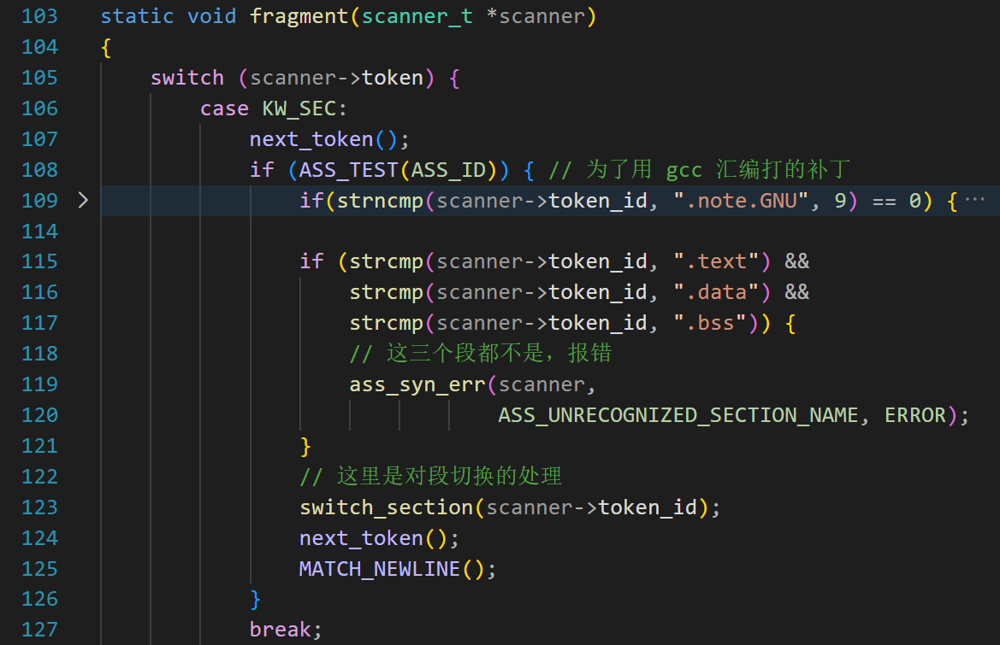
不管是遇到数据还是指令，计数器的值都会增加。我封装了 2 个函数
1 | |
当解析到一个符号定义的时候，我们就调用这个函数增加数据段计数器的值，参数 delta_len 应该是这个数据占用的所有内存大小；
当解析到一条完整的指令的时候，我们就调用这个函数增加代码段计数器的值，，参数 delta_len 应该是这条指令编码的长度。
1 | |
举个例子，还是这段代码。
遇到 “section .data”，创建数据段，section_info->location_cnt = 0;
cur_parsing_section_g 的值是 section_info;
为了得到 list 的地址，调用 get_section_location_cnt()，得到 0；
解析完 list 后，调用 increase_section_location_cnt(400);
所以 section_info->location_cnt = 400；
遇到了 monkey，为了确定 monkey 的偏移地址，调用 get_section_location_cnt();，返回值是 400;
当解析完第 6 行，知道 monkey 这段内存占 4 个字节后，要调用 increase_section_location_cnt(4);所以 section_info->location_cnt = 404；
符号表
下面讲解符号表的代码。
符号表都包含哪些信息呢？
1、符号的类型
2、符号的名字；符号的名字具有唯一性，我们查找符号也是按照名字来查找。
3、符号所属于的段，就是此符号在哪个段定义的
4、地址
5、属性，例如是否是外部的，是否是全局的
6、对于数据，要存储初始值下面的枚举定义了所有的符号类型。
下面的枚举定义了所有的符号类型。
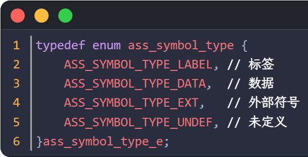
和符号有关的结构体是：
1 | |
第 3 行是类型，第 5 行是符号名，第 9 行是偏移，已经介绍了。
第 4 行是段名，记录这个符号属于哪个段。例如数据定义肯定是属于数据段，标签属于代码段。
第 6 行表示是否声明为 extern
第 7 行表示是否声明为 global
第 10 行，如果是数据定义，这个字段不为 NULL，指向它的初始值。
第 11 行，哈希表的节点，用于加入哈希表，方便查询符号存不存在。
第 12 行，链表节点。此节点仅对数据定义有用，我们用链表记录符号定义的先后顺序，为后面生成 .o 做准备。
以上结构是符号表的“表项”，我们还需要一个“表”。
1 | |
之前已经讲过哈希表结构和用法，这里不赘述。
1 | |
第 3 行，是符号表的初始化。
创建符号的函数
创建符号的代码如下：
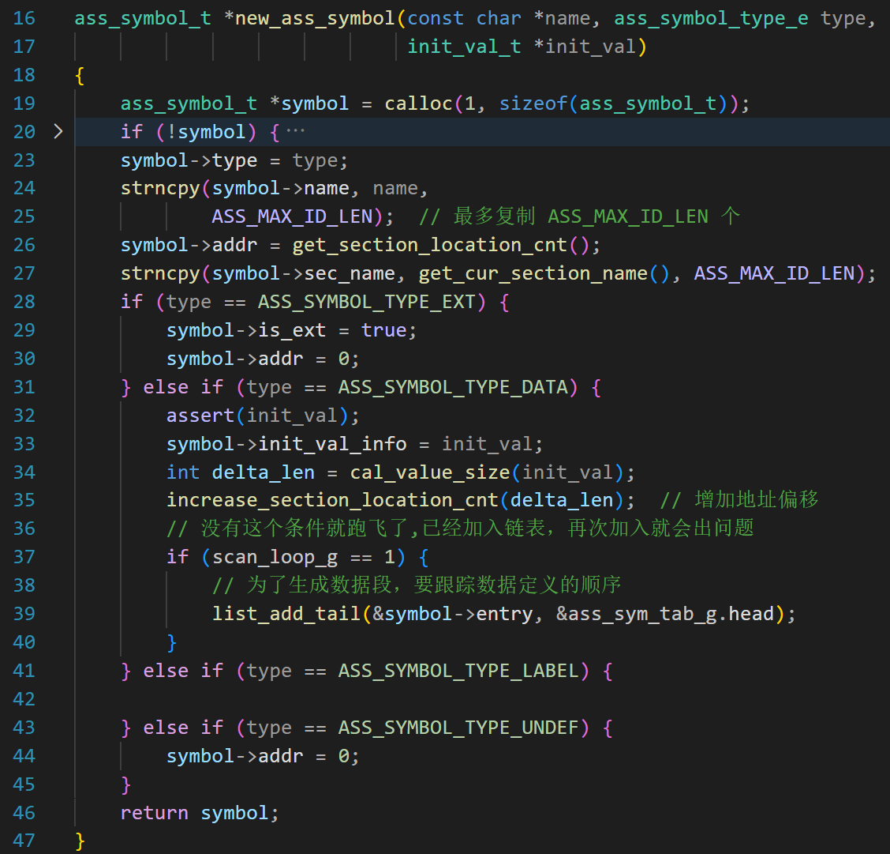
第一个参数是符号名字，第二个参数是符号类型，第三个参数是初始值（对数据定义有效，其他类型的传 NULL）
第 19 行，为 ass_symbol_table_t 结构体分配内存。第 23、24 行，登记符号的类型和名字。
第 26 行，填写符号的偏移。
第 27 行，获取当前段的段名。这个函数很简单，就是 return cur_parsing_section_g->name;
第 28 行，如果这是一个用 extern 声明的符号，设置 is_ext 为 true;
并且设置它的地址偏移为 0，因为它在其他文件定义，只好先填 0，修正地址的工作交给连接器。
第 31 行，如果是数据的定义，那步骤就比较多，第 33 行，设置初始值，这个初始值是怎么来的，后面会讲。
第 35 行，增加段计算器的值。
第 37~39，仅在第一遍扫描的时候，把数据加入链表。
数据定义的解析
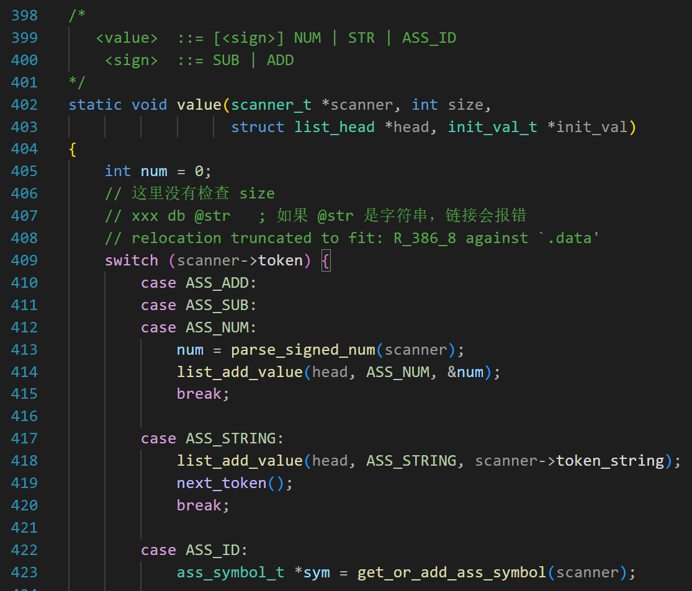
1 | |
例如上面的汇编代码，当解析到 “world” 或者数字，就会匹配到上面的第 417 行或者 410 行。
如果解析到 “langlangshan”，就会匹配到第 422 行。
对于数字或者字符串，比较简单，就是把值加入链表。
链表的头节点是作为参数传进来的。为了简单，我们都用 int 大小存储。
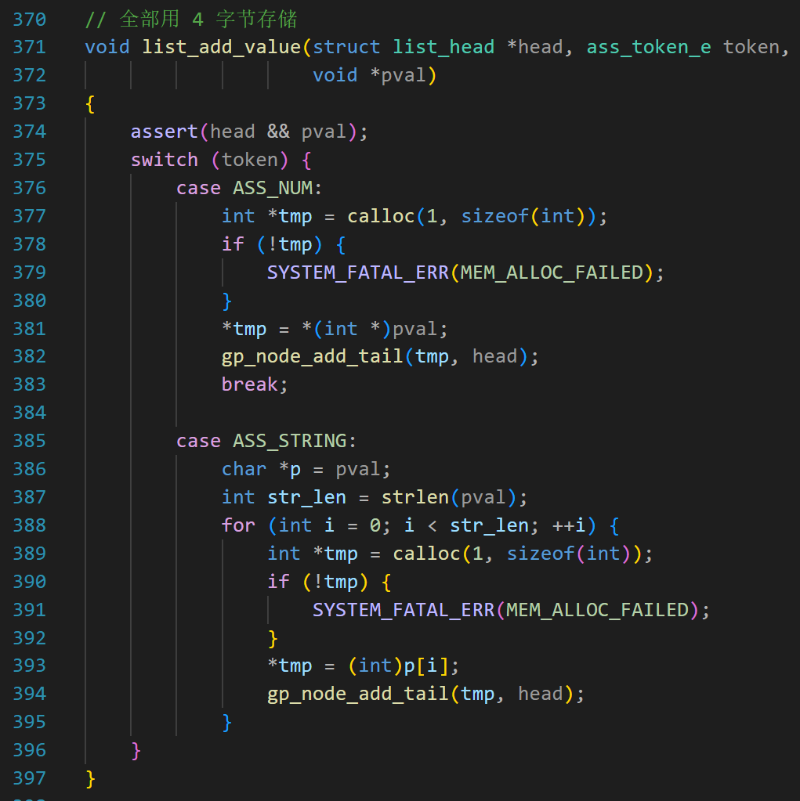
ASS_STRING,首先计算字符串的长度（不包括末尾的 0),然后为每个字符分配内存（int 类型的大小)。
第 393，把字符转换成整型，存进去。
第 394，加入链表。
value 的父函数是
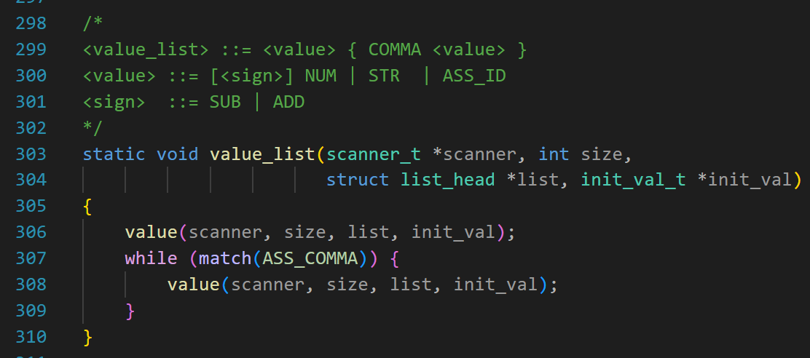
第 307 行，只要遇到逗号，就继续解析，把值都收集到链表。
value_list 的父函数是 values
1 | |
第 16 行创建了一个空的链表（代码很简单，不贴了），把头节点作为参数传给第 17 行的 value_list()；
当 value_list() 执行完，说明一个 item 的值都收集好了。
第 18 行，把这个 item 加入 init_val 指向的结构中（这个函数后面会讲）。
我们先看看 init_val 这个指针来自哪里。
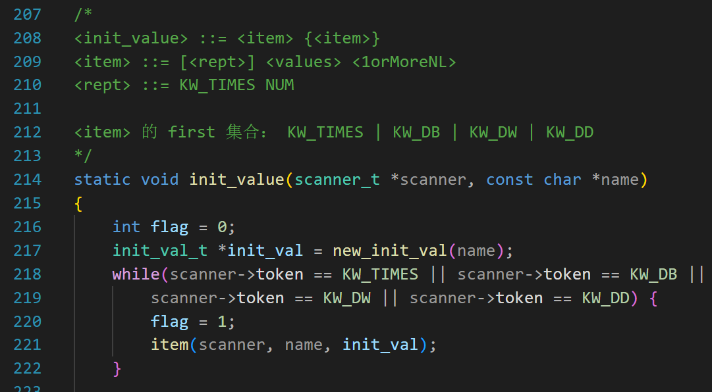
init_val 的源头在第 217 行，它是函数 new_init_val 的返回值。
new_init_val 函数的作用是分配 init_val_t 结构体并初始化，入参是数据符号的名字。
1 | |
第 8~9 行初始化 2 个链表。
第 3 行分配内存，init_val_t 是什么结构体呢？
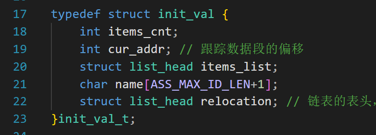
第 18 行，记录一共有多少个 item;比如前面的例子 str_list，它包含 4 个 item，
注意，这个 init_val_t 和后面要说的 item_t 都是我为了解析数据符号而设计的数据结构，和汇编语言没有任何关系。
第 19 行，后面会讲。
第 20 行，是一个链表，所有 item 都挂在这个链表上。
第 21 行，用来存储数据符号的名字，比如 “str_list”
第 22 行，和重定位有关，不用管。
item 也是有结构的：
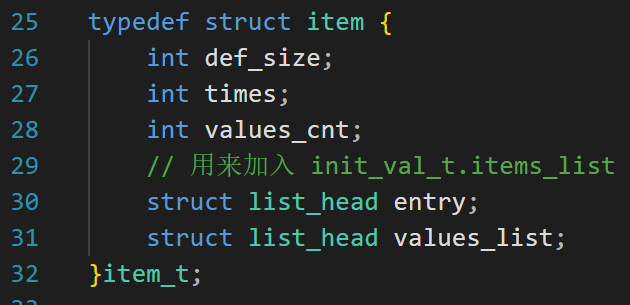
第 26 行，用来记录数据的 size（db=1,dw=2,dd=4）；
第 27 行，重复的次数；
第 28 行，前面的链表上收集了多少个数，这里就是多少；
这些字段都会在 new_item_add 中被填充。
我们看 new_item_add(size, times, val_head, init_val);
意思是根据 val_head 链表收集到的值，创建一个 item，并把这个 item 加入到 init_val 指向的结构中。
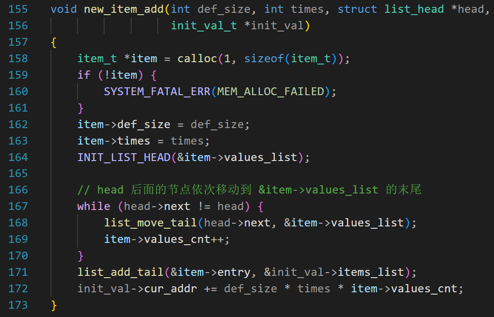
158~161，分配 item 的内存；然后设置 def_size 和 times；
第 164 行，初始化 item 的 values_list 链表为空；
第 167~170，利用 list_move_tail 函数，把 head 上面的节点转移到 item 的 values_list 链表上。
list_move_tail 的工作分为两步：
一是把 head->next 从它所在的链表上删除（不释放内存），二是把它加入到 item->values_list 链表的末尾。
第 167 行的条件是只要 head 链表不为空。
所以，我们是把 head 链表上的节点，从第一个开始，依次加入到 item->values_list 的末尾，所以节点的顺序没有变。
第 169，统计节点的个数。
第 171 行，把 item 加入 init_val->items_list
第 172 行， def_size * times * item->values_cnt 的结果是这个 item 所占内存的大小；
累加到 init_val->cur_addr 上，表示这个 item 解析完成后，数据符号占用内存多大。
为什么要统计这个值，在学习重定位的时候会用。
维护符号表
需要注意，定义符号和引用符号不是一回事。
例如
1 | |
第 2 行的 str_list，这是定义符号;
第 3 行的 langlangshan，这是在 str_list 定义中引用符号;
第 5 行的 test: 这是定义符号;
第 7 行的 monkey，这是引用符号;
第 9、10行的 @L47_else 和 foo，是引用符号;
第 12 行的@L47_else: 这是定义符号。
如何维护符号表？
下表总结了遇到数据定义、标号定义、extern 声明、global 声明、引用符号这 5 种情况，而且第一遍扫描和第二遍扫描处理方法不一样。
| 第一遍扫描 | 第二遍扫描 | |
|---|---|---|
| 数据定义 | 先查表，查不到就创建并添加此符号；查到了，肯定是 ASS_SYMBOL_TYPE_UNDEF 类型，创建同名符号，并替换这个符号 | 更新初始值 |
| 标号定义 | 同上 | 不处理 |
| extern 声明的符号 | 同上 | 不处理 |
| global 声明的符号 | 不处理 | 查找符号，把 is_global 标记为 true; |
| 对符号的引用 | 先查表，如果查不到，就创建一个 ASS_SYMBOL_TYPE_UNDEF 类型的符号，并加入符号表 | 查表，获取正确的符号信息。查到的符号不应该是 ASS_SYMBOL_TYPE_UNDEF 类型，如果是，报错：符号未定义。 |
为了维护符号表，有 2 个核心函数。
1、add_ass_symbol
2、get_or_add_ass_symbol
这 2 个函数互相配合，完成符号表的维护。
get_or_add_ass_symbol
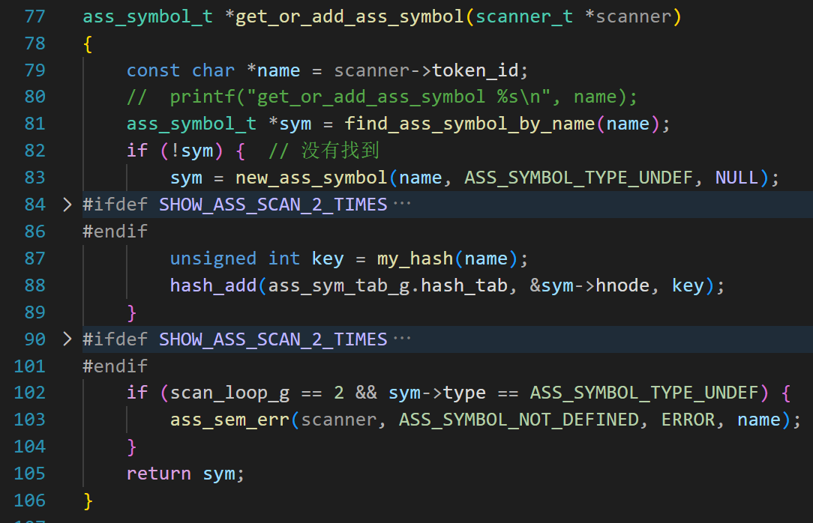
在遇到引用符号的时候，就会调用 get_or_add_ass_symbol；
第 81 行，在符号表中查找这个符号，如果找不到，则创建一个 ASS_SYMBOL_TYPE_UNDEF 类型的符号，并加入符号表；
第 83 行完成符号创建，第 87~88 把符号加入哈希表。
折叠的部分不用管，是后面做实验用的。
第 102 行，如果这是第二遍扫描，那肯定能找到；
我们查看符号类型，如果是 ASS_SYMBOL_TYPE_UNDEF，就报错，因为这个符号未定义，也没有用 extern 声明。
调用 get_or_add_ass_symbol 的地方有 3 处：
1、数据定义里引用了符号
例如前面的例子：
1 | |
第 3 行 str_list 的定义引用了 langlangshan；
2、指令里面引用了符号
例如上面第 7 行和第 8 行，地址包含符号或者操作数是符号；
相关的代码如下：
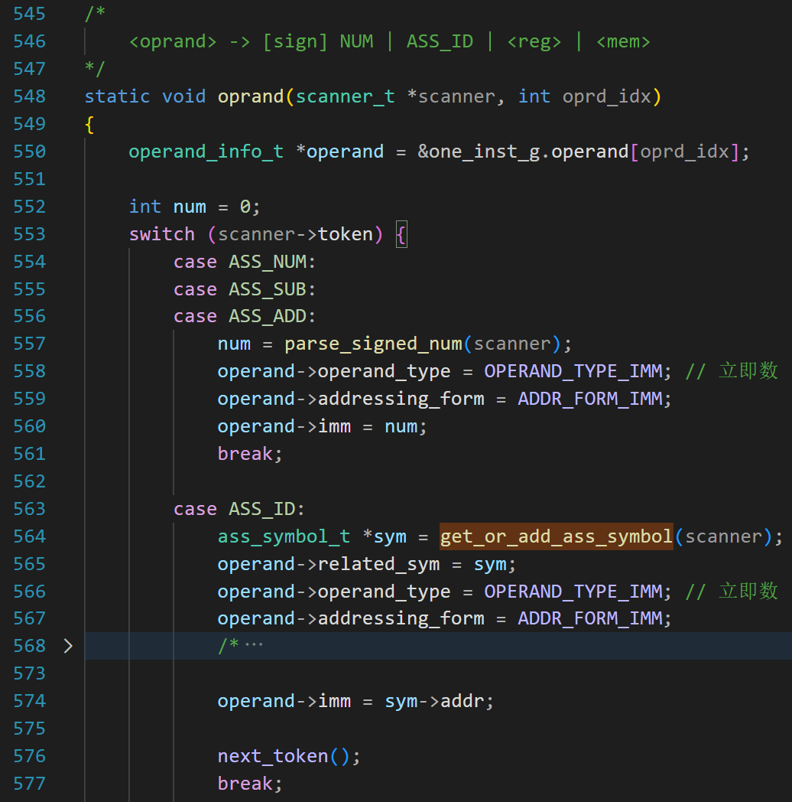
上图第 563 行，操作数里面引用符号；
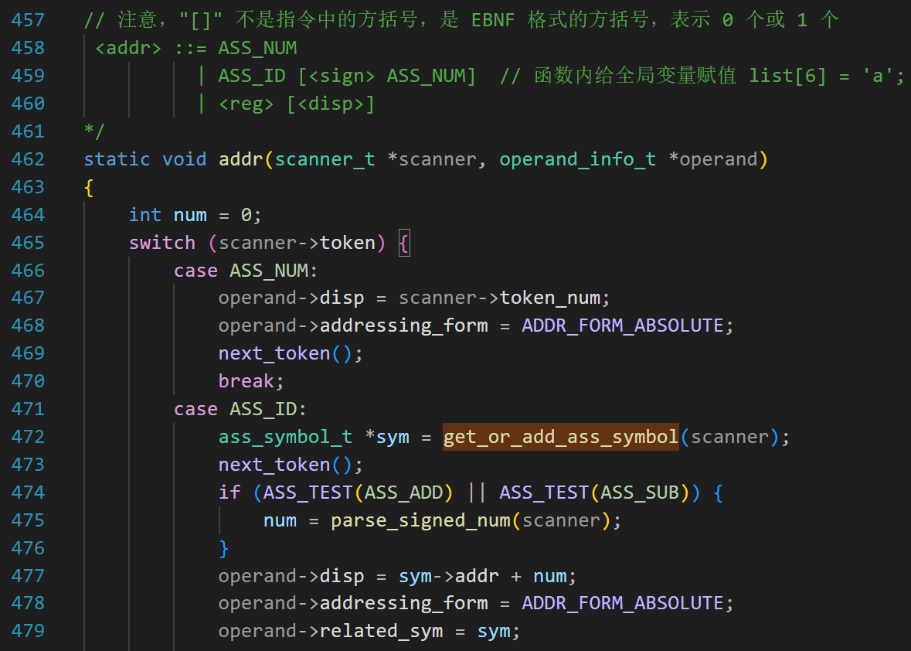
上图第 471 行，地址里面引用符号；
add_ass_symbol
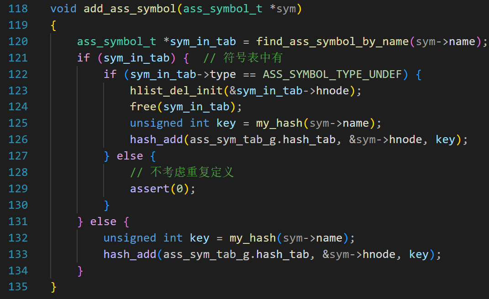
以上是 add_ass_symbol 的代码。
这个函数虽然名字是 add, 但是里面也可能有 replace（替换） 的操作。
在遇到符号定义的时候，会调用这个函数。
第 120 行，根据名字去符号表中查找，如果找到了，肯定是之前某个地方引用了此符号，那时候是作为 ASS_SYMBOL_TYPE_UNDEF 类型添加到符号表的，所以第 122 行肯定为真，我们从符号表中删除之前的那个符号，把现在的符号加入符号表，也就是替换。
如果找不到，就不用替换了，第 132~133 把这个符号加入符号表。
调用 add_ass_symbol 的地方有 3 处
1、遇到了标号的定义
2、遇到了 extern 的声明
3、遇到了数据的定义
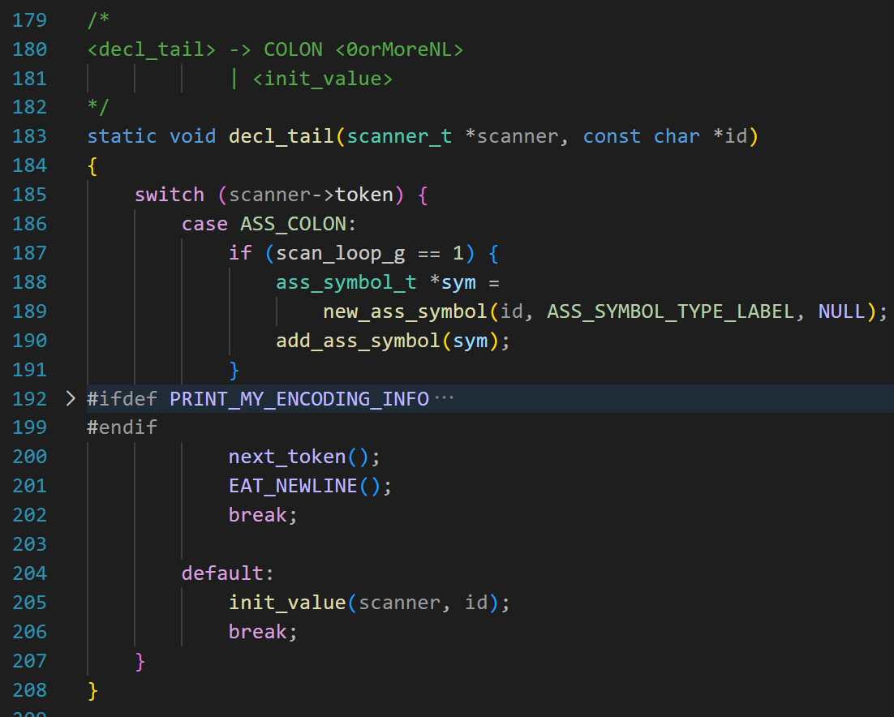
第 187 行，这里是定义一个标号，所以类型是 ASS_SYMBOL_TYPE_LABEL；然后调用 add_ass_symbol
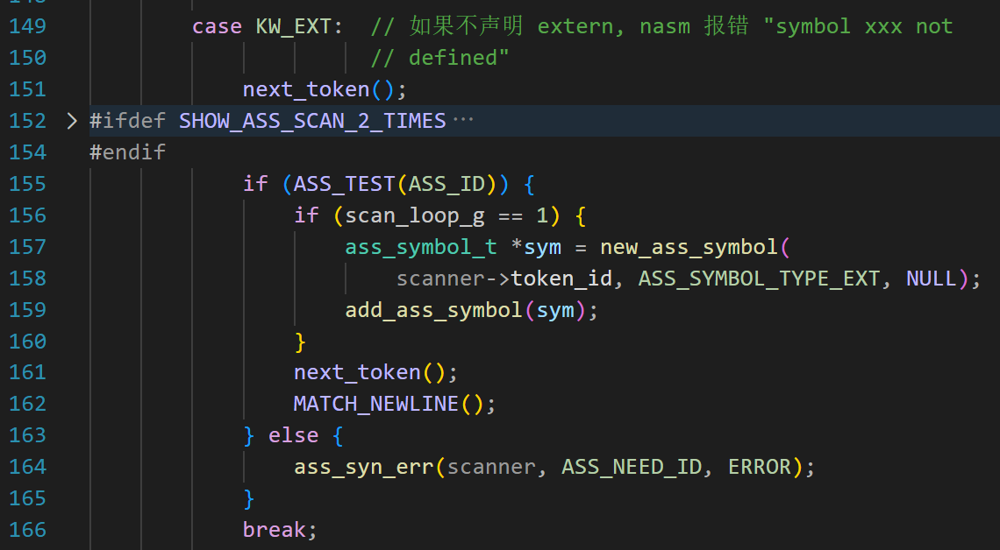
第 149 行，说明遇到了 extern 声明。
第 156~159，创建 ASS_SYMBOL_TYPE_EXT 类型符号，然后调用 add_ass_symbol
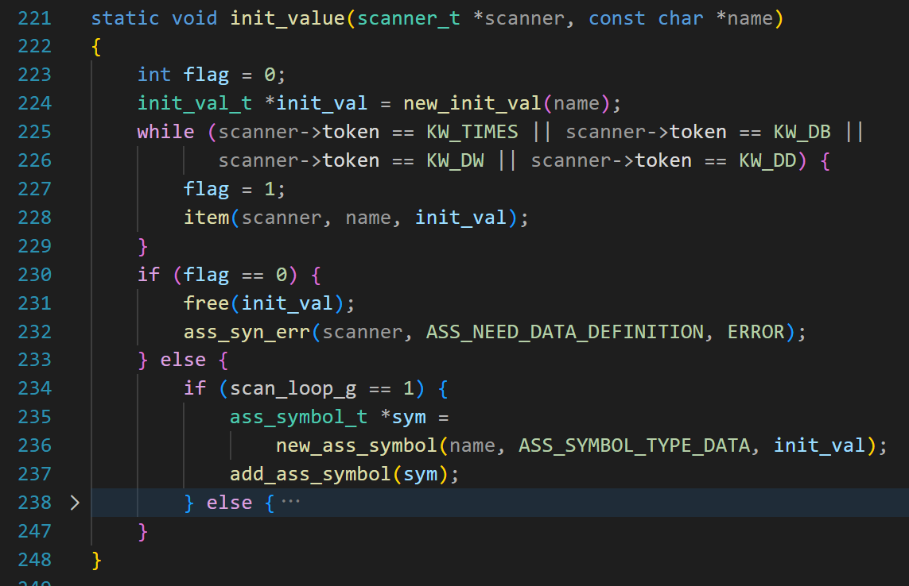
第 234~237，遇到数据定义，创建 ASS_SYMBOL_TYPE_DATA 类型的符号；然后调用 add_ass_symbol
相信读者已经发现了，这三个地方都有条件，就 if (scan_loop_g == 1)
这是因为我们只在第一遍扫描的时候创建和添加（或替换）符号。
更新数据的初始值
再回到前面的例子：
1 | |
第 3 行 str_list 的定义引用了 langlangshan;
在解析 str_list 的初始值的时候，当解析到 langlangshan，会调用 get_or_add_ass_symbol
1 | |
假设这是第一遍扫描，第 14 行，get_or_add_ass_symbol 函数会创建一个 ASS_SYMBOL_TYPE_UNDEF 类型，名字为 langlangshan 的符号;
因为是 ASS_SYMBOL_TYPE_UNDEF 类型，所以第 15 行 sym->addr 等于 0，所以第 16 行加入链表的值就是 0;
继续扫描，遇见了 langlangshan 的定义，发现这是一个本文件的符号，虽然用把符号表种旧的 langlangshan 替换了，但是 str_list 的初始值，还是 3, 5, 9, 0, -24, 7, 7, 9；
在第二遍扫描的时候，会再次扫描 str_list 的定义；
这时候，依然用 get_or_add_ass_symbol 函数查找 langlangshan，这次得到的 sym->addr 不是 0，而是 langlangshan 的偏移地址，加入链表的也是这个偏移地址，这才是我们要的。
所以，当第二次解析 str_list 的初始值后，我们应该更新 str_list 的初始值。
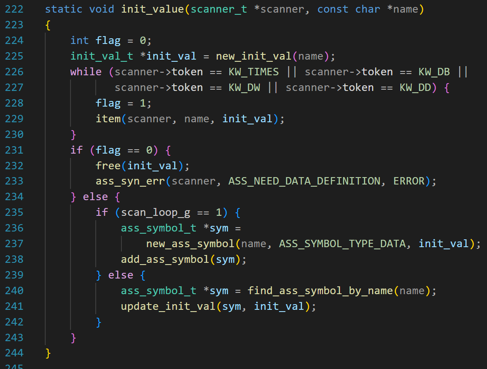
第 229 行，当 while 循环结束，说明解析完毕。
第 240 行，else 分支，说明是第二次扫描。在符号表种查找 name，肯定是有的。
第 241 行，更新初始值。第一个参数是查到的符号，第二个参数是第二次解析的初始值。
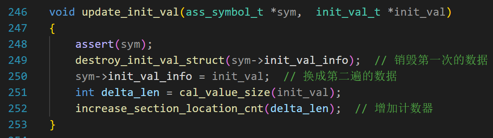
第 249 行，销毁第一次的初始值。
第 250 行，让 init_val_info 指向新的初始值。
第 251，计算初始值占用的内存大小
第 252，增加段计数器。
成果展示
接下来为读者展示第一遍扫描和第二遍扫描的区别。
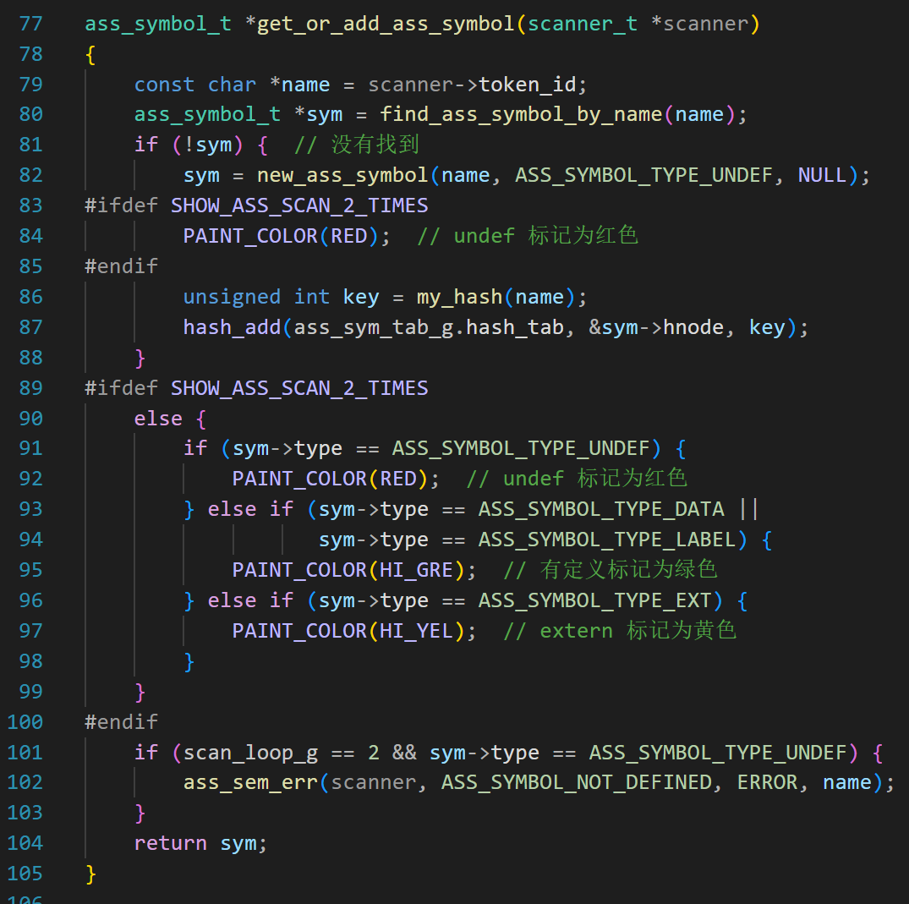
我们修改这个函数，第一遍扫描，第 84 行，如果遇到没有定义的符号，则标记为红色。
第二遍扫描，第 91~98 行，根据符号的类型，标记为红色（未定义）、绿色（数据或者标号）和黄色（extern 声明的）；
对于 fragment 函数，如果遇到 extern 声明、数据定义、标号都标记为蓝色。
如果没有标记颜色，则打印出来是白色。
代码如下：
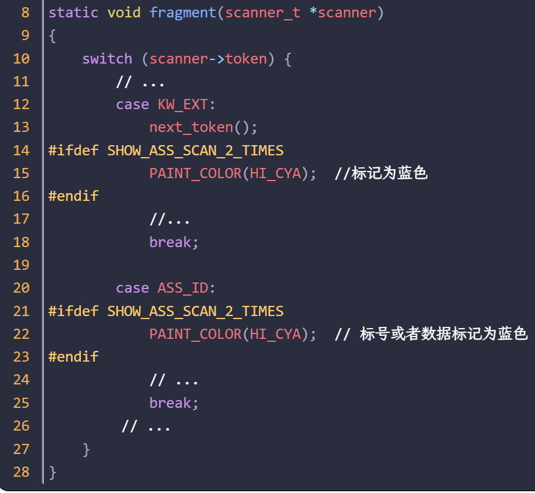
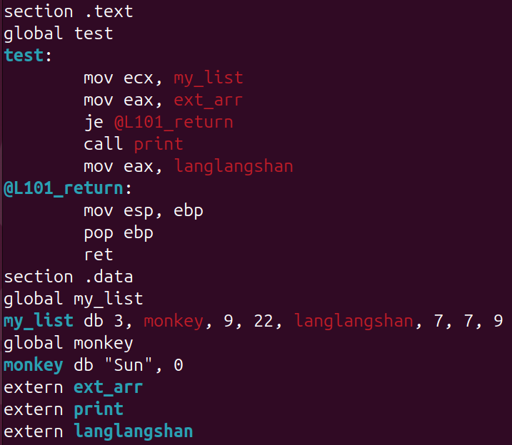
打印出来如上图。代码本身没有什么逻辑，是我拼凑的，我们关注的是颜色。
上面是第一次扫描的结果，可以看到所有符号都加入了符号表，红色的是未定义符号（在引用它的地方是未定义的）。
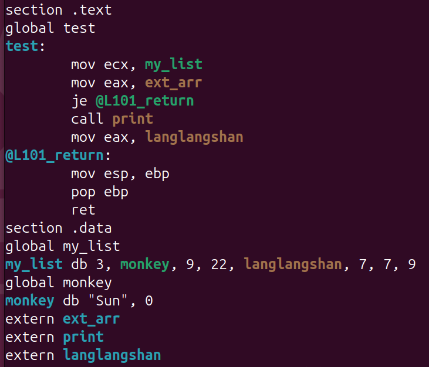
这是第二次扫描的结果。因为查到了 my_list 和标号 @L101_return，所以它们变成绿色了。同理，黄色的是 extern 声明的符号，第二次在符号表里面查到了。
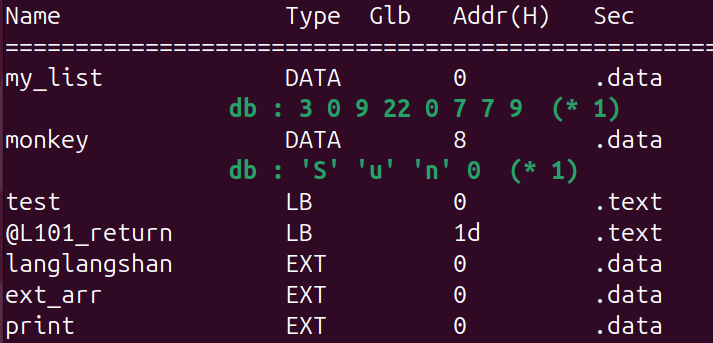
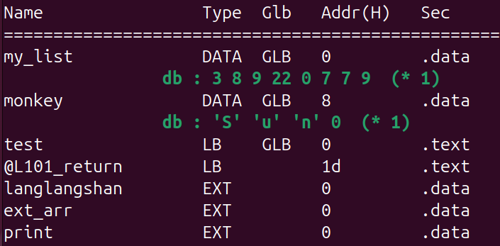
上下两个个图分别是第一次扫描完毕和第二次扫描完毕后打印的符号表。
区别有二，一个是 my_list，monkey，test 的 global 属性是第二次扫描的时候添加的，但是这个不是重点。
二是 my_list 的初始值，第一次是 3，0，…… 第二次是 3，8，……
8 是 符号 monkey 的偏移（my_list 占用了 8 个字节）；这说明 “更新初始值” 的目的达到了。
本文的内容到这里就结束了。
按理说，接下来应该做语义分析，比如操作数匹配检查、寻址合法性校验、数值范围溢出检查等等。
但是我们的汇编器不是一个通用的汇编器，仅仅是为了处理 csub 生成的代码，所以就跳过这些，进行指令翻译。